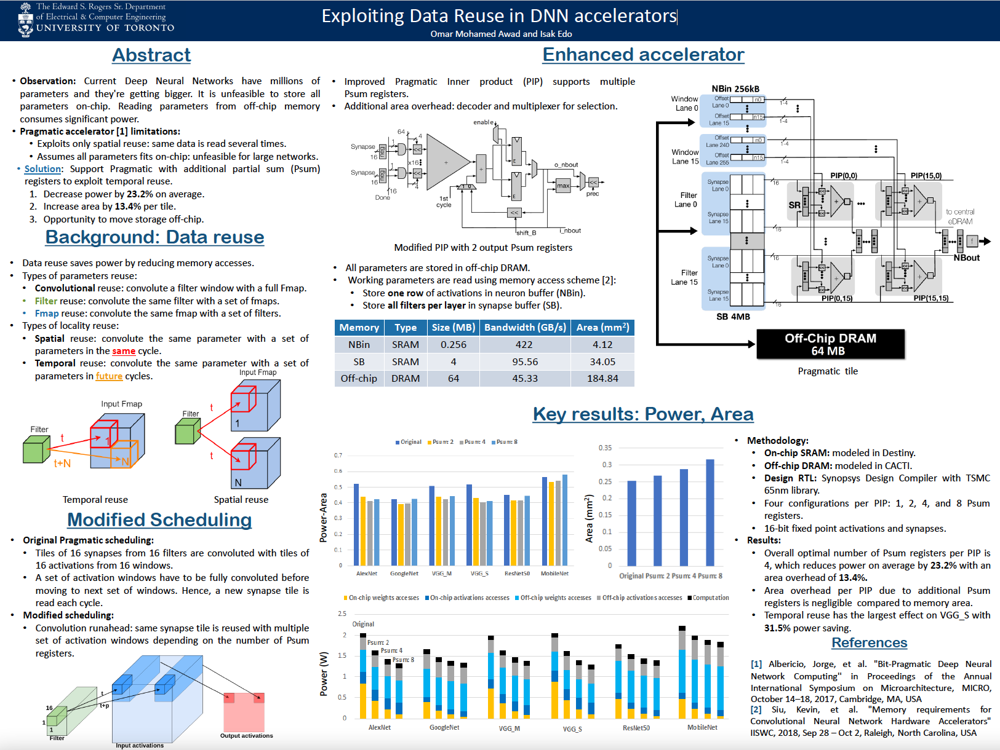

You can also browse my Google Scholar profile.
O. Mohamed Awad, M. Mahmoud, I. Edo, A. Hadi Zadeh, C. Bannon, A. Moshovos
PRaker : A Processing Element for Accelerating Neural Network Training
54th IEEE/ACM International Symposium on Microarchitecture (MICRO), 2021.
[BibTeX]
[Abstract]
[PDF]
[Lightning]
[Main Talk]
@inproceedings{10.1145/3466752.3480106,
author = {Awad, Omar Mohamed and Mahmoud, Mostafa and Edo, Isak and Zadeh, Ali Hadi and Bannon, Ciaran and Jayarajan, Anand and Pekhimenko, Gennady and Moshovos, Andreas},
title = {FPRaker: A Processing Element For Accelerating Neural Network Training},
year = {2021},
isbn = {9781450385572},
publisher = {Association for Computing Machinery},
address = {New York, NY, USA},
url = {https://doi.org/10.1145/3466752.3480106},
doi = {10.1145/3466752.3480106},
pages = {857–869},
numpages = {13},
location = {Virtual Event, Greece},
series = {MICRO '21}
}
We present FPRaker, a processing element for composing training accelerators. FPRaker processes several floatingpoint multiply-accumulation operations concurrently and accumulates their result into a higher precision accumulator. FPRaker
boosts performance and energy efficiency during training by
taking advantage of the values that naturally appear during
training. It processes the significand of the operands of each
multiply-accumulate as a series of signed powers of two. The
conversion to this form is done on-the-fly. This exposes ineffectual
work that can be skipped: values when encoded have few terms
and some of them can be discarded as they would fall outside the
range of the accumulator given the limited precision of floatingpoint. FPRaker also takes advantage of spatial correlation in
values across channels and uses delta-encoding off-chip to reduce
memory footprint and bandwidth. We demonstrate that FPRaker
can be used to compose an accelerator for training and that
it can improve performance and energy efficiency compared
to using optimized bit-parallel floating-point units under isocompute area constraints. We also demonstrate that FPRaker
delivers additional benefits when training incorporates pruning
and quantization. Finally, we show that FPRaker naturally
amplifies performance with training methods that use a different
precision per layer.
A. Hadi Zadeh, I. Edo, O. Mohamed Awad, A. Moshovos
GOBO : Quantizing Attention-Based NLP Models for Low Latency and Energy Efficient Inference
53rd IEEE/ACM International Symposium on Microarchitecture (MICRO), 2020.
[BibTeX]
[Abstract]
[PDF]
@inproceedings{DBLP:conf/micro/ZadehEAM20,
author = {Ali Hadi Zadeh and
Isak Edo and
Omar Mohamed Awad and
Andreas Moshovos},
title = {GOBO: Quantizing Attention-Based {NLP} Models for Low Latency and
Energy Efficient Inference},
booktitle = {53rd Annual {IEEE/ACM} International Symposium on Microarchitecture,
{MICRO} 2020, Athens, Greece, October 17-21, 2020},
pages = {811--824},
publisher = ,
year = {2020},
url = {https://doi.org/10.1109/MICRO50266.2020.00071},
doi = {10.1109/MICRO50266.2020.00071},
timestamp = {Tue, 17 Nov 2020 13:33:12 +0100},
biburl = {https://dblp.org/rec/conf/micro/ZadehEAM20.bib},
bibsource = {dblp computer science bibliography, https://dblp.org}
}
Attention-based models have demonstrated remarkable success in various natural language understanding tasks.
However, efficient execution remains a challenge for these models
which are memory-bound due to their massive number of
parameters. We present GOBO, a model quantization technique
that compresses the vast majority (typically 99.9%) of the 32-
bit floating-point parameters of state-of-the-art BERT models
and their variants to 3 bits while maintaining their accuracy.
Unlike other quantization methods, GOBO does not require finetuning nor retraining to compensate for the quantization error.
We present two practical hardware applications of GOBO. In
the first GOBO reduces memory storage and traffic and as a
result inference latency and energy consumption. This GOBO
memory compression mechanism is plug-in compatible with
many architectures; we demonstrate it with the TPU, Eyeriss,
and an architecture using Tensor Cores-like units. Second, we
present a co-designed hardware architecture that also reduces
computation. Uniquely, the GOBO architecture maintains most
of the weights in 3b even during computation, a property
that: (i) makes the processing elements area efficient, allowing
us to pack more compute power per unit area, (ii) replaces
most multiply-accumulations with additions, and (iii) reduces the
off-chip traffic by amplifying on-chip memory capacity.
M. Mahmoud, I. Edo, A. Hadi Zadeh, O. Mohamed Awad, J. Albericio, A. Moshovos
TensorDash : Exploiting Sparsity to Accelerate Neural Network Training
53rd IEEE/ACM International Symposium on Microarchitecture (MICRO), 2020.
[BibTeX]
[Abstract]
[PDF]
@inproceedings{DBLP:conf/micro/MahmoudEZAPAM20,
author = {Mostafa Mahmoud and
Isak Edo and
Ali Hadi Zadeh and
Omar Mohamed Awad and
Gennady Pekhimenko and
Jorge Albericio and
Andreas Moshovos},
title = {TensorDash: Exploiting Sparsity to Accelerate Deep Neural Network
Training},
booktitle = {53rd Annual {IEEE/ACM} International Symposium on Microarchitecture,
{MICRO} 2020, Athens, Greece, October 17-21, 2020},
pages = {781--795},
publisher = ,
year = {2020},
url = {https://doi.org/10.1109/MICRO50266.2020.00069},
doi = {10.1109/MICRO50266.2020.00069},
timestamp = {Tue, 17 Nov 2020 13:33:12 +0100},
biburl = {https://dblp.org/rec/conf/micro/MahmoudEZAPAM20.bib},
bibsource = {dblp computer science bibliography, https://dblp.org}
}
TensorDash is a hardware-based technique that
enables data-parallel MAC units to take advantage of sparsity in
their input operand streams. When used to compose a hardware
accelerator for deep learning, TensorDash can speedup the training process while also increasing energy efficiency. TensorDash
combines a low-cost sparse input operand interconnect with an
area-efficient hardware scheduler. The scheduler can effectively
extract sparsity in the activations, the weights, and the gradients.
Over a wide set of state-of-the-art models covering various
applications, TensorDash accelerates the training process by
1.95× while being 1.5× more energy efficient when incorporated
on top of a Tensorcore-based accelerator at less than 5% area
overhead. TensorDash is datatype agnostic and we demonstrate
it with IEEE standard mixed-precision floating-point units and
a popular optimized for machine learning floating-point format
(BFloat16).
A. Delmás, S. Sharify, I. Edo, D. Malone Stuart, O. Mohamed Awad, P. Judd, M. Mahmoud, M. Nikolic, K. Siu, Z. Poulos, and A. Moshovos
ShapeShifter : Enabling Fine-Grain Data Width Adaptation in Deep Learning
52nd IEEE/ACM International Symposium on Microarchitecture (MICRO), 2019.
[BibTeX]
[Abstract]
[PDF]
@inproceedings{DBLP:conf/micro/LascorzSVSAJMNS19,
author = {Alberto Delmas Lascorz and
Sayeh Sharify and
Isak Edo Vivancos and
Dylan Malone Stuart and
Omar Mohamed Awad and
Patrick Judd and
Mostafa Mahmoud and
Milos Nikolic and
Kevin Siu and
Zissis Poulos and
Andreas Moshovos},
title = {ShapeShifter: Enabling Fine-Grain Data Width Adaptation in Deep Learning},
booktitle = {Proceedings of the 52nd Annual {IEEE/ACM} International Symposium
on Microarchitecture, {MICRO} 2019, Columbus, OH, USA, October 12-16,
2019},
pages = {28--41},
publisher = ,
year = {2019},
url = {https://doi.org/10.1145/3352460.3358295},
doi = {10.1145/3352460.3358295},
timestamp = {Wed, 16 Oct 2019 10:12:02 +0200},
biburl = {https://dblp.org/rec/conf/micro/LascorzSVSAJMNS19.bib},
bibsource = {dblp computer science bibliography, https://dblp.org}
}
We show that selecting a data width for all values in Deep Neural Networks, quantized or not and even if that width is different per layer, amounts to worst-case design. Much shorter data widths can be used if we target the common case by adjusting the data type width at a much finer granularity. We propose ShapeShifter, where we group weights and activations and encode them using a width specific to each group and where typical group sizes vary from 16 to 256 values. The per group widths are selected statically for the weights and dynamically by hardware for the activations. We present two applications of ShapeShifter. In the first, that is applicable to any system, ShapeShifter reduces off- and on-chip storage and communication. This ShapeShifter-based memory compression is simple and low cost yet reduces off-chip traffic to 33% and 36% for 8-bit and 16-bit models respectively. This makes it possible to sustain higher performance for a given off-chip memory interface while also boosting energy efficiency. In the second application, we show how ShapeShifter can be implemented as a surgical extension over designs that exploit variable precision in time.
C. Kison, O. Mohamed Awad, M. Fyrbiak, C. Paar
Security Implications of Intentional Capacitive Crosstalk
IEEE Transactions on Information Forensics and Security, 2019.
[BibTeX]
[Abstract]
[PDF]
@ARTICLE{8673644,
author={Kison, Christian and Awad, Omar Mohamed and Fyrbiak, Marc and Paar, Christof},
journal={IEEE Transactions on Information Forensics and Security},
title={Security Implications of Intentional Capacitive Crosstalk},
year={2019},
volume={14},
number={12},
pages={3246-3258},
doi={10.1109/TIFS.2019.2900914}}
With advances in shrinking process technology sizes, the parasitic effects of closely routed adjacent wires, crosstalk, still present problems in practice since they directly influence performance and functionality. Even though there is a solid understanding of parasitic effects in hardware designs, the security implications of such undesired effects have been scarcely investigated. In this paper, we leverage the physical routing effects of capacitive crosstalk to demonstrate a new parametric hardware Trojan design methodology. We show that such Trojans can be implemented by only rerouting already existing resources. Thus, our approach possesses a zero-gate area overhead which is both stealthy and challenging to detect with standard visual inspection techniques. In two case studies, we demonstrate its devastating consequences: (1) we realize an implementation attack on a third-party cryptographic AES IP core and (2) we realize a privilege escalation on a general-purpose processor capable of running any modern operating system. In these case studies, we take special care to ensure that the Trojans do not violate design rule checks, which further highlights that the capacitive crosstalk Trojans can be building blocks for malicious circuitry design. We then investigate how state-of-the-art visual inspection techniques can be enhanced to cope with parametric hardware Trojans. In particular, we develop an automated layout-level mitigation approach which exploits the characteristic wire length of capacitive crosstalk Trojans. Finally, we highlight further implementation strategies for capacitive crosstalk Trojans and pinpoint future research directions.
O. Mohamed Awad, Isak Edo
Exploiting Data Reuse in DNN accelerators
Graduate course project @ University of Toronto, 2020.

O. Mohamed Awad
FPRaker: Exploiting Fine-Grain Sparsity to Accelerate Neural Network Training
M.A.Sc. Thesis @ University of Toronto, Canada, 2021.
[AGM2020 Lightning]
[AGM2020 Talk]
[Thesis]
O. Mohamed Awad
Implementation and Detection of Physical Hardware Trojans in a Cryptographic core based on Capacitive Crosstalk
B.Sc. Thesis @ Ruhr University Bochum, Germany, 2017.
[Thesis]